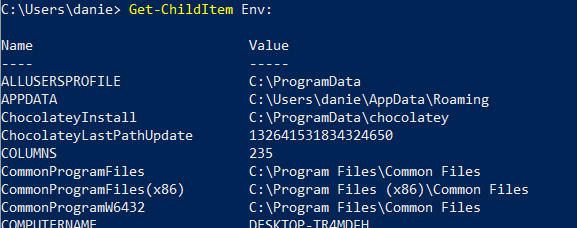

Windows Environment Variables
Print environment variables with Powershell
PS> Get-ChildItem Env:

• To select a character from the path:
With PowerShell, a word is considered an array, so we have to specify the index of the character we need. As we only need one character, we don't have to specify the start and end positions
Print environment variables with CMD
C:\> set
• To print a single environment variable with CMD
echo %[VARIABLE]%
• To select a character from the path
With CMD we need to specify the start position and the end position
◇ we can specify the start position and the length
◇ specify the start position and the negative end position